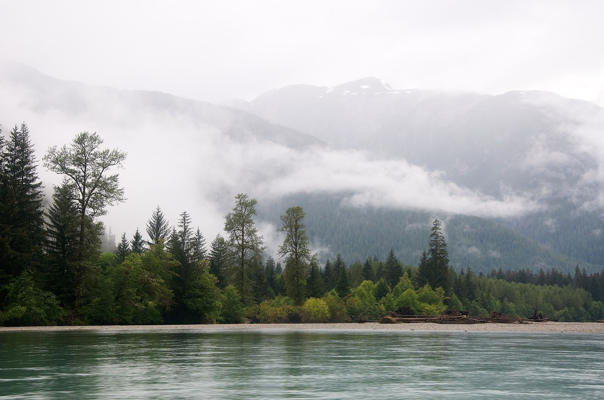
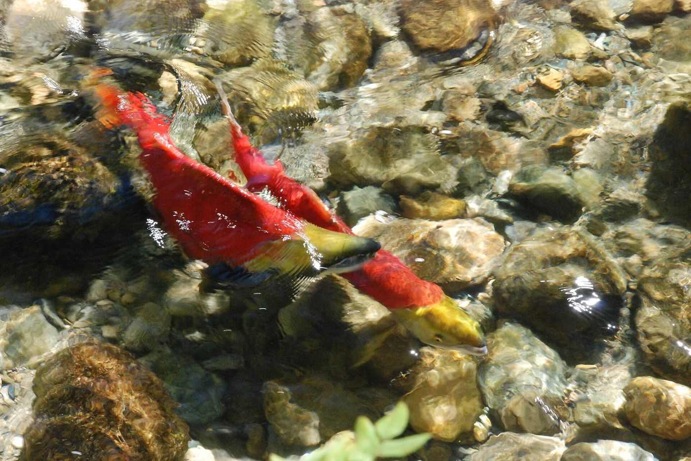

Live monitoring
Water Watch
The patient’s chart, in real time. Drought levels, river flows and snowpack for the whole province — pulled straight from public monitoring stations while you read this.
Connecting to monitoring feeds…
Drought levels by basin
Where B.C. is running dry
The province rates every water basin from Level 0 (no drought) to Level 5 (exceptionally dry — adverse impacts almost certain). Click any basin.
What do the drought levels actually mean?
Think of them as a triage scale for watersheds. Levels 0–1: conditions are normal to dry — voluntary conservation. Level 2–3: streams drop, fish get squeezed, and communities are asked to cut back hard. Level 4–5: impacts on people, farms and ecosystems are likely to certain — emergency measures, irrigation cut-offs, and fish rescues. The province publishes assessments through the B.C. Drought Information Portal; this map reads the same data feed.
Real-time river flows
Six rivers that tell the story
Each gauge is a stethoscope on a river’s pulse — live from Environment and Climate Change Canada’s hydrometric network, with the last two days of readings.
Flows in cubic metres per second (m³/s). One m³ is 1,000 litres — a bathtub holds about a sixth of one. Data: ECCC Water Office, station numbers shown on each card.
Local knowledge, live
Water scarcity, assessed by the people who live there
This is what the CodeBlue plan looks like when it’s real: watershed-level assessments made locally — including by Indigenous-led bodies like the Nk’eʔxép Management Committee in the Nicola Valley, which weighs streamflow and snowpack alongside Syilx law and the teachings of the Four Food Chiefs.
| Watershed | Scarcity level | Assessed by |
|---|---|---|
| Loading local assessments… | ||
Live from the B.C. water scarcity feed. Local watershed boards would bring this kind of decision-making to every region — that’s the plan.
Snowpack — next year’s water
The savings account
About this data
Everything on this page is drawn live from public monitoring: the B.C. Drought Information Portal (drought levels and water scarcity assessments), the ECCC National Hydrometric Program (river flows), and the B.C. River Forecast Centre (snow basin indices). No account, no tracking — your browser talks directly to the public feeds. If a feed is down, the panel says so rather than showing stale numbers.

Numbers only matter if someone acts on them.
B.C. still has no permanent system for turning these warnings into action. That’s what CodeBlue is for.